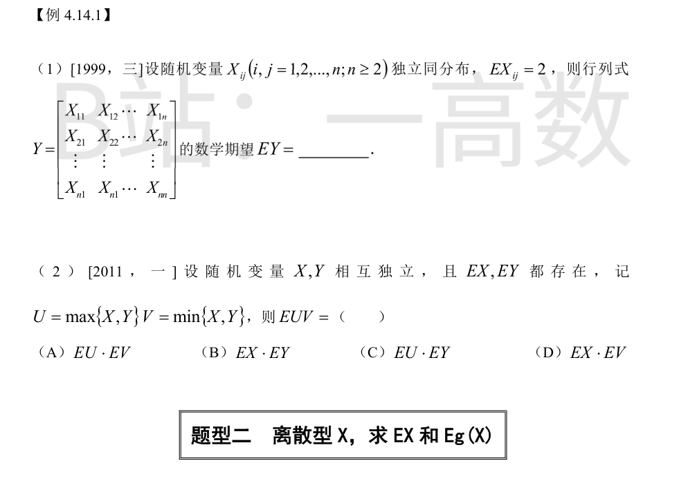
由行列式定义 $Y=\sum_{\sigma}\operatorname{sgn}(\sigma)\prod_{i=1}^{n}X_{i\sigma(i)}$，利用期望的线性与独立性：
$$EY=\sum_{\sigma}\operatorname{sgn}(\sigma)\prod_{i=1}^{n}EX_{i\sigma(i)}=2^n\sum_{\sigma}\operatorname{sgn}(\sigma).$$
当 $n\ge 2$ 时奇、偶排列个数相等，$\sum_{\sigma}\operatorname{sgn}(\sigma)=0$，故 $EY=0$。
也可按第一列展开验证：每个余子式的期望是元素全为 2 的 $n-1$ 阶行列式；$n=2$ 时 $E(X_{11}X_{22}-X_{12}X_{21})=2\cdot2-2\cdot2=0$；$n>2$ 时全 2 阵行列式为 0。结论一致。
无论 $X\ge Y$ 还是 $X<Y$，恒有 $UV=\max\{X,Y\}\cdot\min\{X,Y\}=XY$。
故 $EUV=E(XY)$；又 $X,Y$ 相互独立，$E(XY)=EX\cdot EY$。选 (B)。
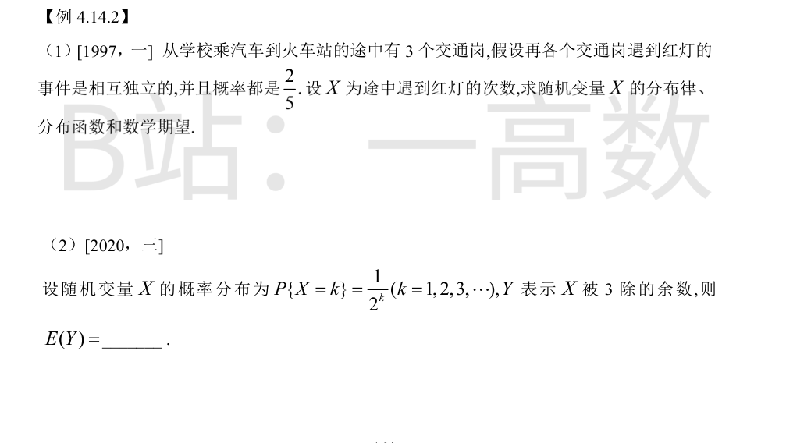
$X\sim B\left(3,\frac25\right)$，$P\{X=k\}=C_3^k\left(\frac25\right)^k\left(\frac35\right)^{3-k}$：
$$P\{X=0\}=\frac{27}{125},\quad P\{X=1\}=\frac{54}{125},\quad P\{X=2\}=\frac{36}{125},\quad P\{X=3\}=\frac{8}{125}.$$
分布函数（阶梯形）：
$$F(x)=\begin{cases}0, & x<0,\\ \dfrac{27}{125}, & 0\le x<1,\\ \dfrac{81}{125}, & 1\le x<2,\\ \dfrac{117}{125}, & 2\le x<3,\\ 1, & x\ge 3.\end{cases}$$
$$E(X)=np=3\times\frac25=\frac65.$$
（逐点验证：$E(X)=0\cdot\frac{27}{125}+1\cdot\frac{54}{125}+2\cdot\frac{36}{125}+3\cdot\frac{8}{125}=\frac{54+72+24}{125}=\frac{150}{125}=\frac65$，一致。）
记 $q=\frac18$，按 $k\bmod 3$ 分类求和：
$$P\{Y=0\}=\sum_{j=1}^{\infty}\frac{1}{2^{3j}}=\frac{1/8}{1-1/8}=\frac17,$$
$$P\{Y=1\}=\sum_{j=0}^{\infty}\frac{1}{2^{3j+1}}=\frac{1/2}{1-1/8}=\frac47,\qquad P\{Y=2\}=\sum_{j=0}^{\infty}\frac{1}{2^{3j+2}}=\frac{1/4}{1-1/8}=\frac27.$$
（校验：$\frac17+\frac47+\frac27=1$。）于是
$$E(Y)=0\cdot\frac17+1\cdot\frac47+2\cdot\frac27=\frac87.$$
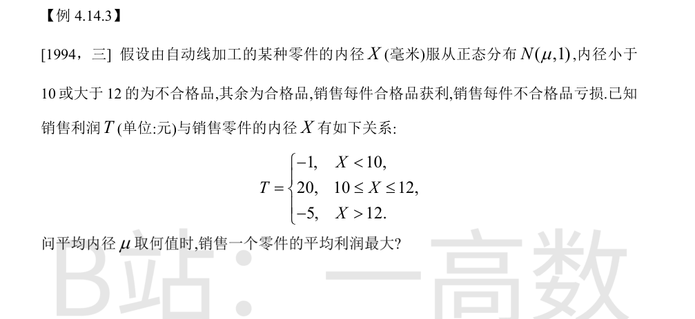
记 $\Phi,\varphi$ 为标准正态的分布函数与密度，$X\sim N(\mu,1)$：
$$E(T)=-\Phi(10-\mu)+20\left[\Phi(12-\mu)-\Phi(10-\mu)\right]-5\left[1-\Phi(12-\mu)\right]=25\Phi(12-\mu)-21\Phi(10-\mu)-5.$$
求导并令其为 0：
$$\frac{dE(T)}{d\mu}=-25\varphi(12-\mu)+21\varphi(10-\mu)=0\;\Longrightarrow\;\frac{\varphi(10-\mu)}{\varphi(12-\mu)}=\frac{25}{21}.$$
由 $\varphi(u)\propto e^{-u^2/2}$：
$$e^{\frac{(12-\mu)^2-(10-\mu)^2}{2}}=\frac{25}{21}\;\Longrightarrow\;\frac{(22-2\mu)\cdot 2}{2}=\ln\frac{25}{21}\;\Longrightarrow\;22-2\mu=\ln\frac{25}{21},$$
$$\mu=11-\frac12\ln\frac{25}{21}\approx 11-0.0872\approx 10.91.$$
判别极值：$\dfrac{d^2E(T)}{d\mu^2}=25\varphi'(12-\mu)-21\varphi'(10-\mu)=-42\varphi(10-\mu)<0$（代入临界条件化简），故为最大值点；且 $\mu\to\pm\infty$ 时 $E(T)\to -1,-5$，该唯一驻点即全局最大。
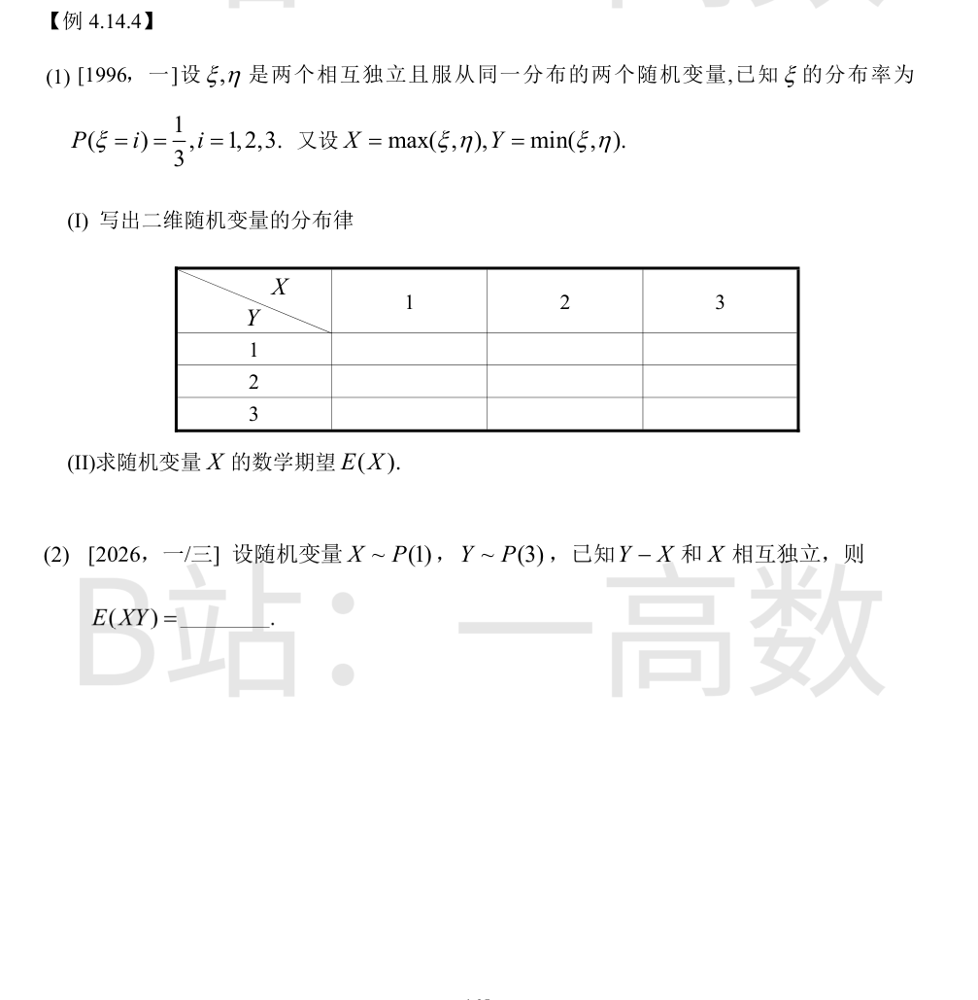
逐点枚举 $\xi,\eta$ 的 9 个等可能独立组合：
- $X=Y=i$ 即 $\xi=\eta=i$：$P=\frac19$，得 $P(X=1,Y=1)=P(X=2,Y=2)=P(X=3,Y=3)=\frac19$；
- $X=i>Y=j$：$\{\xi=i,\eta=j\}\cup\{\xi=j,\eta=i\}$，$P=\frac29$，得 $P(X=2,Y=1)=P(X=3,Y=1)=P(X=3,Y=2)=\frac29$；
- $X<Y$ 不可能，概率为 0。
联合分布律（行 $Y$，列 $X$）：
| Y\X | 1 | 2 | 3 |
|---|---|---|---|
| 1 | 1/9 | 2/9 | 2/9 |
| 2 | 0 | 1/9 | 2/9 |
| 3 | 0 | 0 | 1/9 |
合计 $\frac19+\frac29+\frac29+\frac19+\frac29+\frac29+\frac19=1$。
由联合分布律得 $X$ 的边缘分布：
$$P(X=1)=\frac19,\quad P(X=2)=\frac29+\frac19=\frac39=\frac13,\quad P(X=3)=\frac29+\frac29+\frac19=\frac59.$$
$$E(X)=1\cdot\frac19+2\cdot\frac39+3\cdot\frac59=\frac{1+6+15}{9}=\frac{22}{9}.$$
把 $Y$ 分解为 $Y=X+(Y-X)$。由 $E(Y)=3$（因 $Y\sim P(3)$），$E(X)=1$（因 $X\sim P(1)$）：
$$E(Y-X)=E(Y)-E(X)=3-1=2.$$
利用 $Y-X$ 与 $X$ 相互独立：
$$E(XY)=E\left[X^2+X(Y-X)\right]=E(X^2)+E(X)\,E(Y-X).$$
泊松分布 $P(1)$：$E(X^2)=\operatorname{Var}(X)+[E(X)]^2=1+1=2$。故
$$E(XY)=2+1\times 2=4.$$
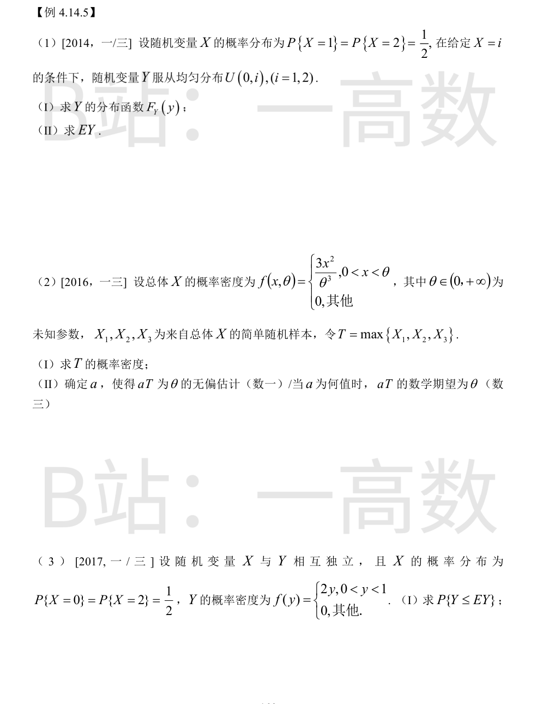
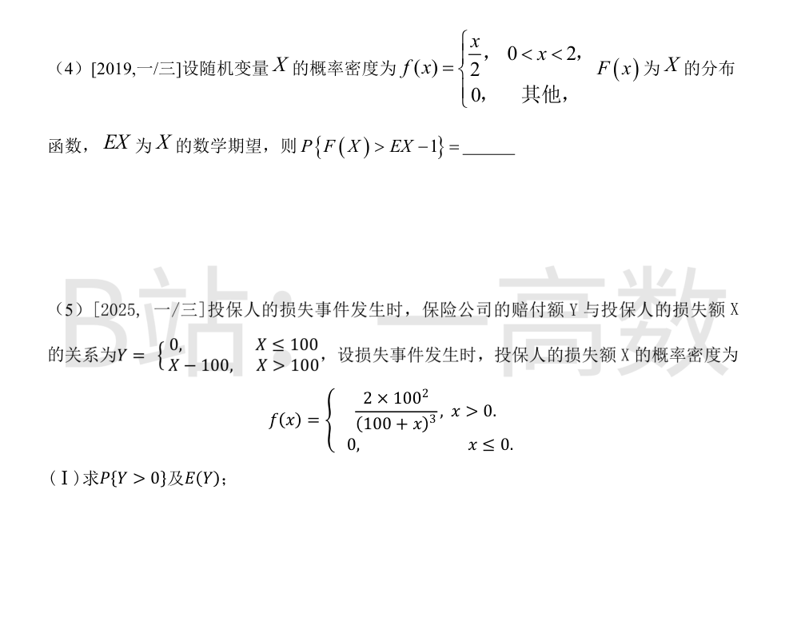
**(I)** 全概率公式：$F_Y(y)=P\{Y\le y\}=\frac12 P\{U(0,1)\le y\}+\frac12 P\{U(0,2)\le y\}$，其中 $U(0,i)$ 的分布函数为 $y/i$（$0<y<i$）：
- $y<0$：$F_Y(y)=0$；
- $0\le y<1$：$F_Y(y)=\frac12 y+\frac12\cdot\frac y2=\frac{3y}{4}$；
- $1\le y<2$：$F_Y(y)=\frac12\cdot 1+\frac12\cdot\frac y2=\frac12+\frac y4$；
- $y\ge 2$：$F_Y(y)=1$。
**(II)** 重期望公式：$E\left[U(0,i)\right]=\frac i2$，
$$EY=E\left[E(Y\mid X)\right]=\frac12\cdot\frac12+\frac12\cdot\frac22\cdot\frac{1}{1}\cdot 1=\frac14+\frac12=\frac34.$$
**(I)** $F(x)=\left(\frac x\theta\right)^3$（$0<x<\theta$），样本独立同分布：
$$F_T(t)=P\{\max\le t\}=\left[\frac{t}{\theta}\right]^9,\quad 0<t<\theta,$$
$$f_T(t)=F_T'(t)=\frac{9t^8}{\theta^9},\quad 0<t<\theta;\ \text{其他为 }0.$$
**(II)**
$$E(T)=\int_0^{\theta} t\cdot\frac{9t^8}{\theta^9}\,dt=\frac{9}{\theta^9}\cdot\frac{\theta^{10}}{10}=\frac{9\theta}{10}.$$
令 $E(aT)=a\cdot\frac{9\theta}{10}=\theta$，解得 $a=\dfrac{10}{9}$。
先求 $EY$：
$$EY=\int_0^1 y\cdot 2y\,dy=\frac23.$$
于是
$$P\{Y\le EY\}=P\left\{Y\le\frac23\right\}=\int_0^{2/3}2y\,dy=\left(\frac23\right)^2=\frac49.$$
（注：原图此小题仅印出 (I)，后续小问不在切片内，故只答 (I)。）
$F(x)=\dfrac{x^2}{4}$（$0\le x\le 2$）；
$$EX=\int_0^2 x\cdot\frac x2\,dx=\frac{1}{2}\cdot\frac{8}{3}=\frac43,\qquad EX-1=\frac13.$$
由概率积分变换 $F(X)\sim U(0,1)$：
$$P\{F(X)>EX-1\}=P\left\{F(X)>\frac13\right\}=1-\frac13=\frac23.$$
直接验证：$\dfrac{X^2}{4}>\dfrac13\iff X>\dfrac{2}{\sqrt3}$，$P=\int_{2/\sqrt3}^{2}\dfrac x2\,dx=\dfrac{1}{4}\left(4-\dfrac43\right)=\dfrac23$，一致。
$P\{Y>0\}=P\{X>100\}$：
$$P\{Y>0\}=\int_{100}^{+\infty}\frac{2\cdot100^2}{(100+x)^3}\,dx=20000\left[-\frac{1}{2(100+x)^2}\right]_{100}^{\infty}=\frac{20000}{2\cdot200^2}=\frac14.$$
期望（令 $u=100+x$，$x-100=u-200$）：
$$E(Y)=\int_{100}^{\infty}(x-100)\cdot\frac{20000}{(100+x)^3}\,dx=20000\int_{200}^{\infty}\frac{u-200}{u^3}\,du=20000\left[\frac1u+\frac{100}{u^2}\right]_{200}^{\infty}$$
$$=20000\left(\frac{1}{200}-\frac{100}{200^2}\right)=20000\left(\frac{1}{200}-\frac{1}{400}\right)=20000\cdot\frac{1}{400}=50.$$
故 $P\{Y>0\}=\dfrac14$，$E(Y)=50$（元）。（注：原图此小题仅印出 (I)，后续小问不在切片内。）
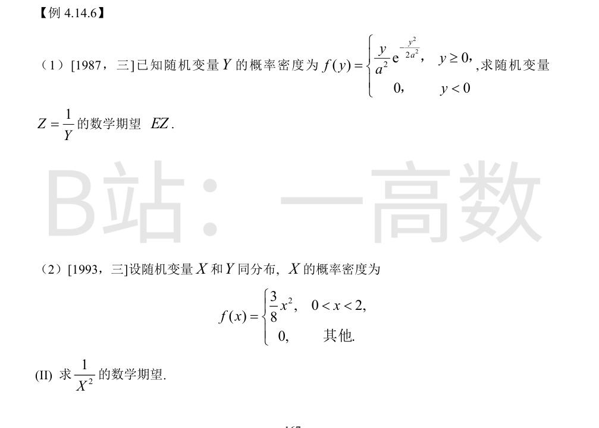
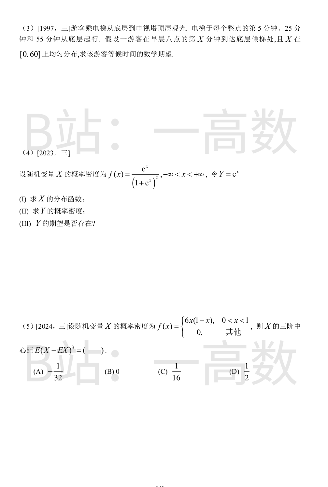
$a>0$。
$$EZ=\int_0^{\infty}\frac1y\cdot\frac{y}{a^2}e^{-\frac{y^2}{2a^2}}\,dy=\frac{1}{a^2}\int_0^{\infty}e^{-\frac{y^2}{2a^2}}\,dy.$$
利用高斯积分 $\displaystyle\int_0^{\infty}e^{-\frac{y^2}{2a^2}}dy=\frac12\sqrt{2\pi}\,a=\frac{\sqrt{2\pi}}{2}a$：
$$EZ=\frac{1}{a^2}\cdot\frac{\sqrt{2\pi}}{2}\,a=\frac{1}{a}\cdot\frac{\sqrt{2\pi}}{2}=\frac1a\sqrt{\frac{\pi}{2}}.$$
被积函数奇性在 $x=0$ 处可约去：
$$E\left(\frac{1}{X^2}\right)=\int_0^2 \frac{1}{x^2}\cdot\frac{3x^2}{8}\,dx=\int_0^2\frac38\,dx=\frac{3}{8}\times 2=\frac34.$$
等候时间
$$g(X)=\begin{cases}5-X, & 0\le X\le 5,\\ 25-X, & 5<X\le 25,\\ 55-X, & 25<X\le 55,\\ 65-X, & 55<X\le 60.\end{cases}$$
分段积分：
$$\int_0^5(5-x)dx=12.5,\quad \int_5^{25}(25-x)dx=200,\quad \int_{25}^{55}(55-x)dx=450,\quad \int_{55}^{60}(65-x)dx=37.5.$$
合计 700，由 $X\sim U[0,60]$：
$$E(\text{等候})=\frac{1}{60}\times 700=\frac{35}{3}\approx 11.67\ (\text{分钟}).$$
**(I)** 令 $u=e^t$：
$$F(x)=\int_{-\infty}^{x}\frac{e^t}{(1+e^t)^2}dt=\int_{0}^{e^x}\frac{du}{(1+u)^2}=\left[-\frac{1}{1+u}\right]_0^{e^x}=1-\frac{1}{1+e^x}=\frac{e^x}{1+e^x}.$$
校验：$x\to-\infty$ 得 0，$x\to+\infty$ 得 1。（ Logistic 分布。）
**(II)** $y>0$ 时 $F_Y(y)=P\{e^X\le y\}=P\{X\le\ln y\}=\dfrac{e^{\ln y}}{1+e^{\ln y}}=\dfrac{y}{1+y}$，求导：
$$f_Y(y)=\frac{1}{(1+y)^2},\quad y>0;\qquad f_Y(y)=0,\ y\le 0.$$
**(III)**
$$E(Y)=\int_0^{\infty}\frac{y}{(1+y)^2}\,dy,$$
而 $\dfrac{y}{(1+y)^2}\sim\dfrac1y\ (y\to\infty)$，且 $\displaystyle\int_1^{\infty}\frac{y}{(1+y)^2}dy=\left[\ln(1+y)+\frac{1}{1+y}\right]_1^{\infty}=\infty$，积分发散，故 $E(Y)$ 不存在。
密度满足 $f(x)=f(1-x)$，关于 $x=\dfrac12$ 对称，且 $EX=\dfrac12$，故三阶中心矩为 0。
直接计算验证：
$$EX=\int_0^16x^2(1-x)dx=6\left(\frac13-\frac14\right)=\frac12,\quad EX^2=\int_0^16x^3(1-x)dx=6\left(\frac14-\frac15\right)=\frac{3}{10},$$
$$EX^3=\int_0^16x^4(1-x)dx=6\left(\frac15-\frac16\right)=\frac15.$$
$$E(X-EX)^3=EX^3-3EX\cdot EX^2+2(EX)^3=\frac15-\frac32\cdot\frac{3}{10}+\frac14=\frac{4-9+5}{20}=0.$$
选 (B)。
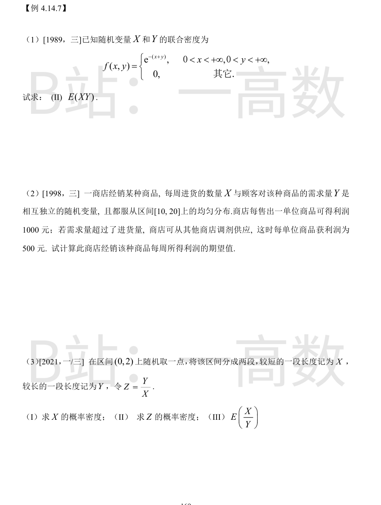
$f(x,y)=e^{-x}\cdot e^{-y}$ 可分离，故 $X,Y$ 独立且都服从参数为 1 的指数分布，$EX=EY=1$。于是
$$E(XY)=EX\cdot EY=1.$$
直接积分验证：$\displaystyle\int_0^{\infty}\int_0^{\infty}xy\,e^{-(x+y)}dxdy=\left(\int_0^{\infty}xe^{-x}dx\right)^2=1^2=1$。
利润函数：售出 $\min(X,Y)$ 单位各获利 1000，超出部分 $(Y-X)^+$ 各获利 500：
$$T=1000\min(X,Y)+500(Y-X)^+.$$
**求 $E[\min(X,Y)]$**：$P\{\min>t\}=P\{X>t\}P\{Y>t\}=\left(\frac{20-t}{10}\right)^2$（$10\le t\le 20$），
$$E[\min(X,Y)]=10+\int_0^{10}\left(\frac{10-s}{10}\right)^2ds=10+\frac{1}{100}\cdot\frac{1000}{3}=\frac{40}{3}.$$
**求 $E[(Y-X)^+]$**：$U=Y-X$ 的密度 $f_U(u)=\dfrac{10-|u|}{100}$（$|u|<10$），
$$E[(Y-X)^+]=\int_0^{10}u\cdot\frac{10-u}{100}du=\frac{1}{100}\left(500-\frac{1000}{3}\right)=\frac53.$$
（校验：$E[\min]=E[X]-E[(X-Y)^+]=15-\frac53=\frac{40}{3}$，一致。）
于是
$$E(T)=1000\cdot\frac{40}{3}+500\cdot\frac53=\frac{40000+2500}{3}=\frac{42500}{3}\approx 14166.7\ (\text{元}).$$
设所取点 $U\sim U(0,2)$，则 $X=\min(U,2-U)\in(0,1)$，$Y=2-X$。
**(I)** $0\le x\le 1$ 时 $P\{X\le x\}=P\{U\le x\}+P\{U\ge 2-x\}=\dfrac x2+\dfrac x2=x$，故 $F_X(x)=x$（$0\le x\le1$），
$$f_X(x)=1,\quad 0<x<1\ (\text{其他为 }0).$$
**(II)** $Z=\dfrac{Y}{X}=\dfrac{2-X}{X}=\dfrac{2}{X}-1$ 关于 $X$ 单调减，$z\in[1,+\infty)$；$\{Z\le z\}\iff\left\{X\ge\dfrac{2}{1+z}\right\}$：
$$F_Z(z)=1-\frac{2}{1+z}\ (z\ge 1),\qquad f_Z(z)=\frac{2}{(1+z)^2},\quad z\ge 1\ (\text{其他为 }0).$$
**(III)**
$$E\left(\frac XY\right)=\int_0^1\frac{x}{2-x}\cdot 1\,dx=\int_0^1\left(-1+\frac{2}{2-x}\right)dx=\left[-x-2\ln(2-x)\right]_0^1=2\ln 2-1.$$
（交叉验证：$E(X/Y)=E(1/Z)=\int_1^{\infty}\dfrac{2\,dz}{z(1+z)^2}=2\ln2-1$，一致。）
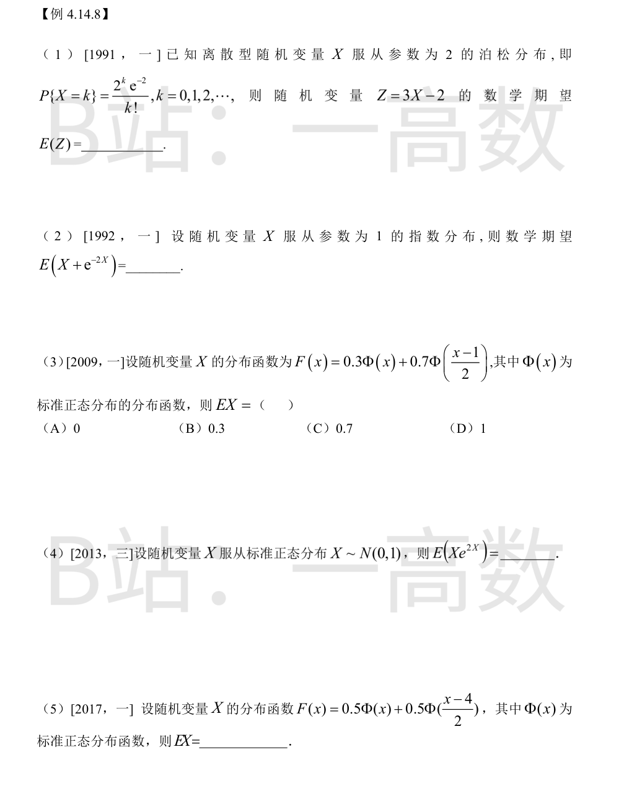
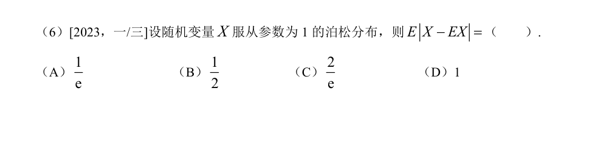
$E(X)=\lambda=2$，由期望线性：$E(Z)=3E(X)-2=3\times2-2=4$。
$f(x)=e^{-x}\ (x>0)$，$EX=1$。
$$E(e^{-2X})=\int_0^{\infty}e^{-2x}e^{-x}dx=\int_0^{\infty}e^{-3x}dx=\frac13.$$
$$E\left(X+e^{-2X}\right)=1+\frac13=\frac43.$$
$F(x)$ 是 $N(0,1)$ 与 $N(1,2^2)$ 分布函数的加权混合（权重 0.3、0.7），混合分布的期望按权重线性合成：
$$EX=0.3\times 0+0.7\times 1=0.7.$$
选 (C)。
方法一（Stein 引理）：标准正态下 $E[Xg(X)]=E[g'(X)]$，取 $g(x)=e^{2x}$：
$$E\left(Xe^{2X}\right)=E\left(2e^{2X}\right)=2E\left(e^{2X}\right).$$
由矩母函数 $E(e^{tX})=e^{t^2/2}$，$t=2$：$E(e^{2X})=e^{2}$。故 $E(Xe^{2X})=2e^2$。
方法二：$M'(t)=E(Xe^{tX})=(\mu+t\sigma^2)e^{\mu t+t^2\sigma^2/2}\big|_{\mu=0,\sigma=1,t=2}=2e^2$。
$F(x)$ 为 $N(0,1)$ 与 $N(4,2^2)$ 的等权混合，故
$$EX=0.5\times 0+0.5\times 4=2.$$
$EX=1$。
$$E|X-1|=\sum_{k=0}^{\infty}|k-1|\frac{e^{-1}}{k!}=e^{-1}\left(1+\sum_{k=2}^{\infty}\frac{k-1}{k!}\right).$$
其中 $\displaystyle\sum_{k=2}^{\infty}\frac{k-1}{k!}=\sum_{k=2}^{\infty}\frac{1}{(k-1)!}-\sum_{k=2}^{\infty}\frac{1}{k!}=(e-1)-(e-2)=1$。
故 $E|X-EX|=e^{-1}(1+1)=\dfrac{2}{e}$。选 (C)。
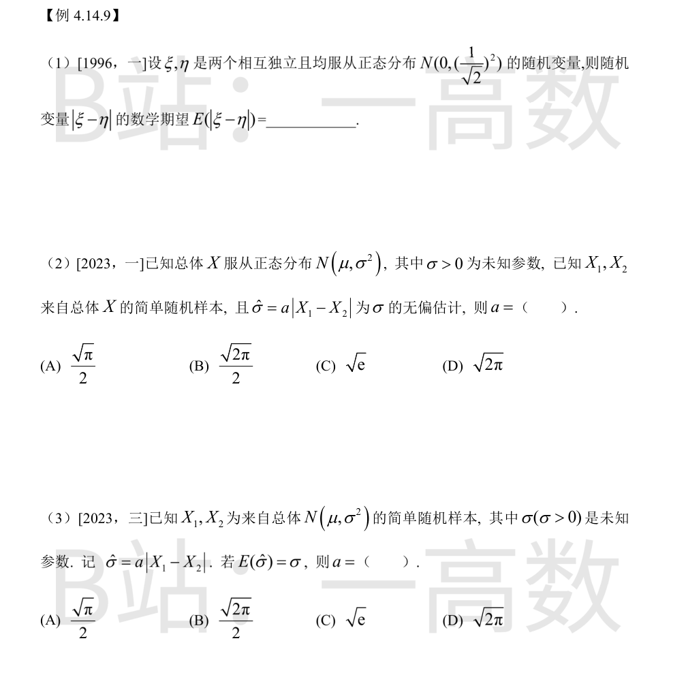
$\xi-\eta\sim N(0,\sigma^2+\sigma^2)$，$\sigma^2=\dfrac12$，故 $\xi-\eta\sim N(0,1)$。
标准正态绝对矩：$E|Z|=\displaystyle\int_{-\infty}^{\infty}|z|\frac{e^{-z^2/2}}{\sqrt{2\pi}}dz=2\int_0^{\infty}\frac{z\,e^{-z^2/2}}{\sqrt{2\pi}}dz=\frac{2}{\sqrt{2\pi}}=\sqrt{\frac{2}{\pi}}.$
故 $E(|\xi-\eta|)=\sqrt{\dfrac2\pi}$。
$X_1-X_2\sim N(0,2\sigma^2)$，即标准差为 $\sqrt2\sigma$ 的正态。由上题结论：
$$E|X_1-X_2|=\sqrt2\,\sigma\sqrt{\frac2\pi}=\frac{2\sigma}{\sqrt\pi}.$$
无偏性要求 $E(\hat\sigma)=a\cdot\dfrac{2\sigma}{\sqrt\pi}=\sigma$，解得 $a=\dfrac{\sqrt\pi}{2}$。选 (A)。
与数一第 (2) 小题同源：$X_1-X_2\sim N(0,2\sigma^2)$，
$$E|X_1-X_2|=\sqrt{2}\sigma\cdot\sqrt{\frac{2}{\pi}}=\frac{2\sigma}{\sqrt\pi},$$
令 $a\cdot\dfrac{2\sigma}{\sqrt\pi}=\sigma$ 得 $a=\dfrac{\sqrt\pi}{2}$。选 (A)。